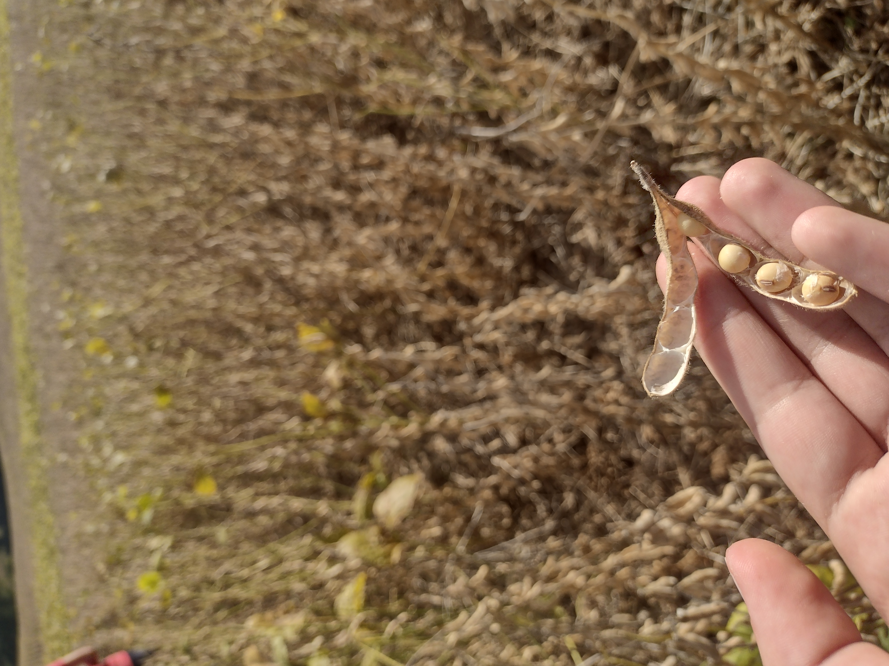
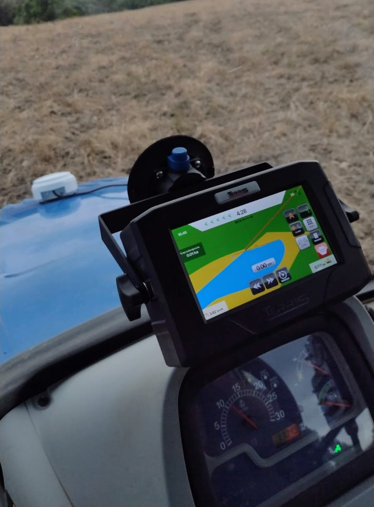

Como podemos ver as conexões entre o campo e a cidade:

Alimentos

Sustentabilidade

Conheça como isso acontece atualmente!
Campo
Cidade
Os produtos chegam mais rapido às prateleiras dos supermercados e gerando menos percas.
Com menos percas, os alientos se tornam mais baratos e consequentemente com mais qualidade.
Sendo essa conexão boa tanto para os agricultores, quanto para os consumidores

As conexões permitem pesquisas e tecnologias chegarem aos agricultores.

As tecnologias possibilitam a comunição, inovações, pesquisas.